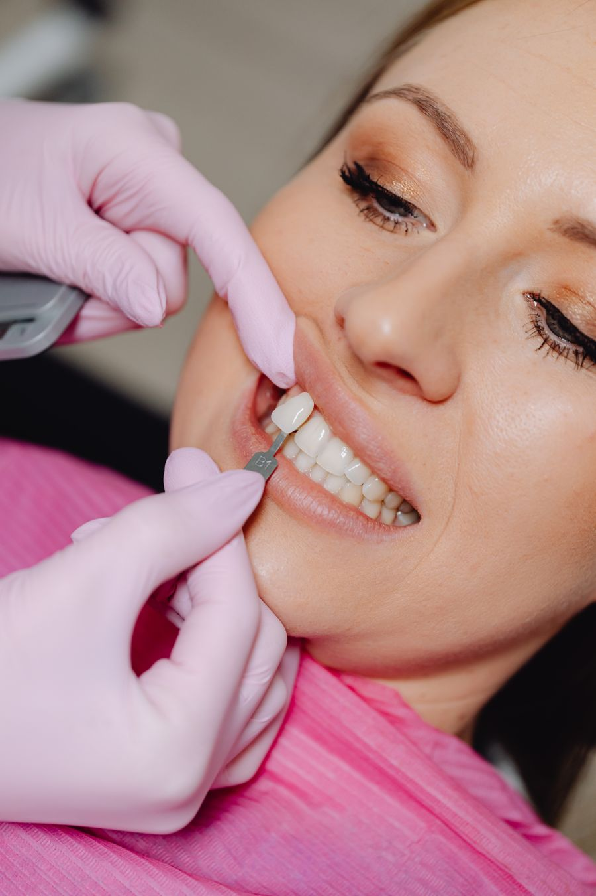
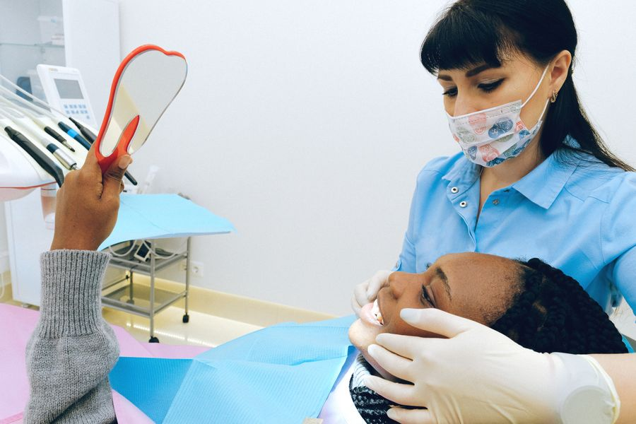
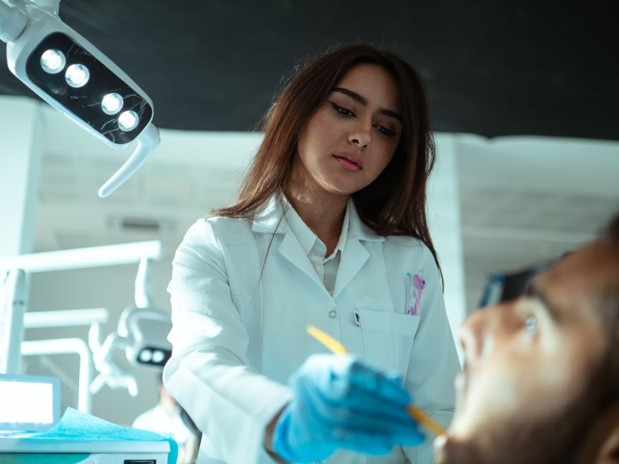
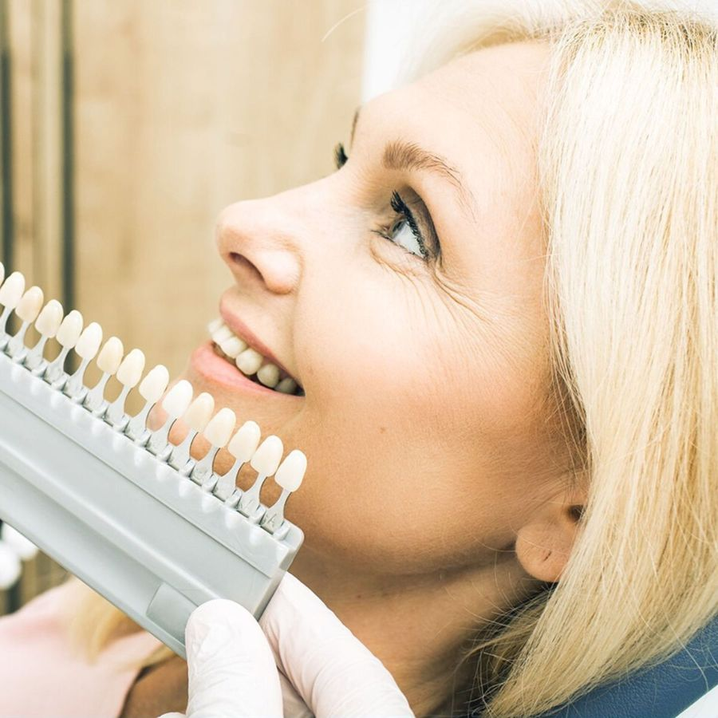
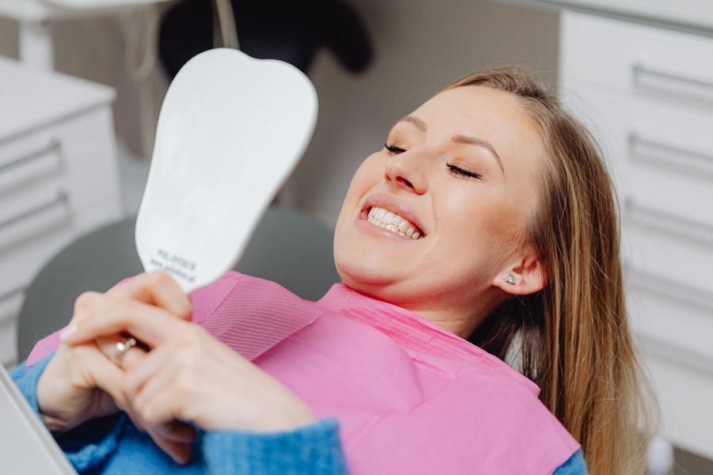
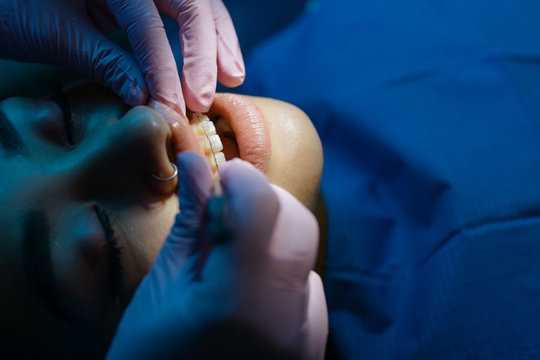
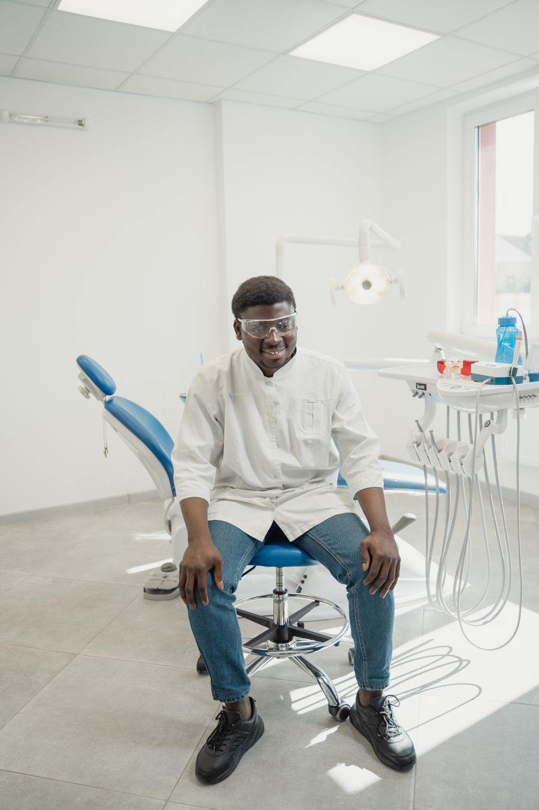
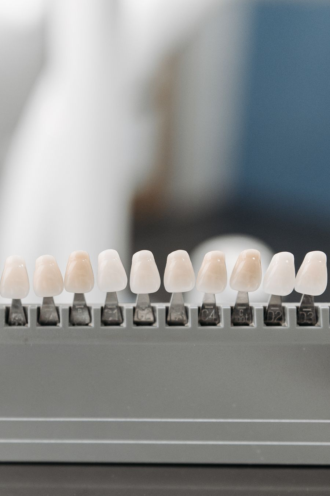
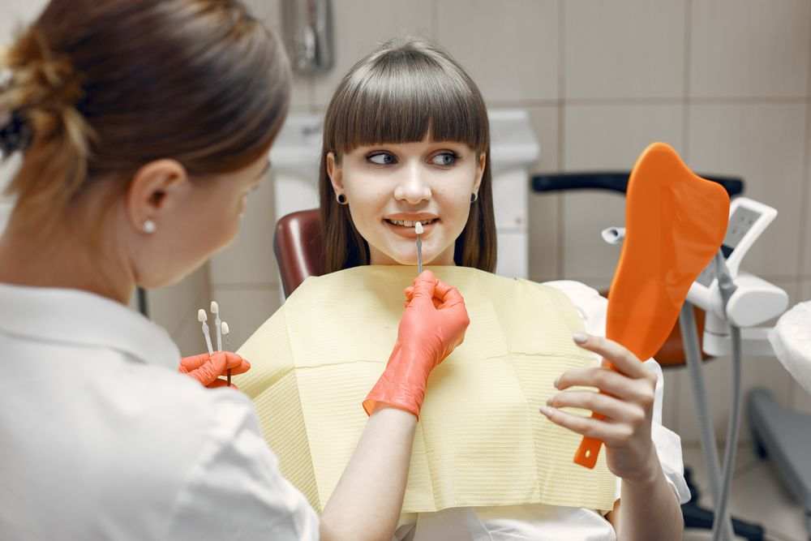
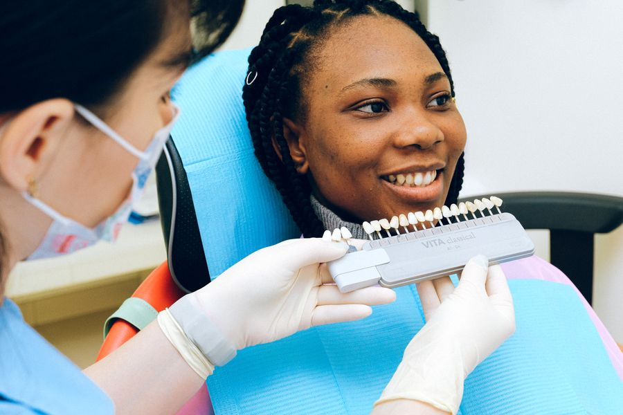

درمان ریشه (عصبکشی)
درمان دقیق کانالهای ریشه برای از بین بردن درد و عفونت و حفظ دندان طبیعی شما.
تمرکز مطب دکتر زهرا کریم روی درمان ریشه است؛ از عصبکشی دقیق تا عصبکشی مجددِ دندانهایی که قبلاً درمان شدهاند. هدف ما یک چیز است: حفظ دندان طبیعی خودتان، با درمانی آرام و حسابشده.
خدمات درمانی و زیبایی مطب دکتر زهرا کریم در میرداماد؛ با تمرکز ویژه روی درمان ریشه.

درمان دقیق کانالهای ریشه برای از بین بردن درد و عفونت و حفظ دندان طبیعی شما.

دندانی که قبلاً عصبکشی شده و دوباره دردناک یا عفونی شده، همیشه محکوم به کشیدن نیست؛ درمان مجدد ریشه میتواند نجاتش دهد.

درمان کانالهای دشوار و مواردی مثل فایل شکسته در کانال ریشه، با حوصله و دقت بالا.

بازسازی دندانهای پوسیده یا آسیبدیده بعد از درمان ریشه، با ترمیم همرنگ و طبیعی.

درمانهای زیبایی برای لبخندی مرتبتر و روشنتر، متناسب با فرم چهره و دندانهای خودتان.

معاینه کامل، تشخیص زودهنگام پوسیدگی و برنامهریزی درمان؛ قبل از اینکه درد شروع شود.

خیلی از دندانهایی که «باید کشیده شوند» با یک درمان ریشه اصولی قابل حفظاند. در مطب دکتر زهرا کریم در میرداماد، اول دندان شما دقیق بررسی میشود و بعد، صادقانهترین مسیر درمان پیشنهاد میشود.
بخش اصلی کار مطب، عصبکشی و عصبکشی مجدد است؛ یعنی درمانی که هر روز با دقت و تجربه انجام میشود.
کانالهای پیچیده و فایل شکسته در ریشه، از مواردی است که در این مطب بهطور جدی پیگیری و درمان میشود.
درمان با تمام شدن جلسه تمام نمیشود؛ مراقبتهای پس از درمان ریشه قدمبهقدم برایتان توضیح داده میشود.
مطب در قلب میرداماد تهران است و گرفتن نوبت، فقط با یک پیام واتساپ انجام میشود.
دقت در جزئیات، از معاینه تا آخرین مرحله درمان.



دندان و ریشه آن با معاینه و عکس بررسی میشود تا علت درد یا عفونت دقیق مشخص شود.
قبل از شروع، مسیر درمان و تعداد جلسات برایتان توضیح داده میشود؛ بدون ابهام.
کانالهای ریشه با بیحسی موضعی، پاکسازی و پر میشوند تا دندان از داخل درمان شود.
دندان ترمیم میشود و مراقبتهای بعد از درمان را یاد میگیرید تا نتیجه ماندگار بماند.
درمان ریشه با بیحسی موضعی انجام میشود و در طول درمان نباید درد احساس کنید. بعد از جلسه، کمی حساسیت یا درد خفیف برای چند روز طبیعی است و معمولاً با مسکن ساده کنترل میشود.
بله، در خیلی از موارد ممکن است. اگر دندانی بعد از عصبکشی دوباره دردناک یا عفونی شود، «عصبکشی مجدد» یعنی باز کردن، پاکسازی دوباره و پر کردن کانالها؛ روشی برای حفظ دندان، بهجای کشیدن آن. اینکه دندان شما مناسب این درمان هست یا نه، بعد از معاینه و عکس مشخص میشود.
تا برطرف شدن بیحسی چیزی نخورید تا گونه و زبانتان گاز گرفته نشود. تا تکمیل ترمیم نهایی، روی دندان درمانشده غذای سفت نجویید. مسواک و نخ دندان را مثل همیشه ادامه دهید و اگر درد شدید، تورم یا باز شدن پانسمان پیش آمد، با مطب تماس بگیرید.
سادهترین راه، پیام در واتساپ به شماره ۰۹۳۳۲۶۲۸۳۵۲ است؛ یا با شماره ۰۲۱۲۲۹۰۵۴۹۱ تماس بگیرید. آدرس مطب: تهران، میرداماد، بین مصدق جنوب و شمس تبریزی، پلاک ۲۴۶، طبقه ۳، واحد ۱۳.
هرچه زودتر بررسی شود، شانس حفظ دندان بیشتر است. همین حالا پیام بده.